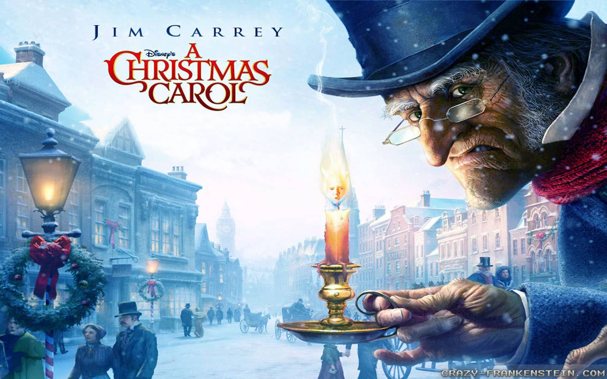

Один дома
- Страна: США
- Год: 1990
- Жанр: комедия, семейный

Многодетные родители впопыхах забывают взять в Рождественское путешествие самого младшего сына Кевина. Мальчишка оказывается не промах и совершенно спокойно пользуется кредитной картой отца, заказывает еду в номер гостиницы, успешно сражается с бандитами и вполне способен выжить один в незнакомом городе. Море смешных ситуаций, любимая музыка и совершенно очаровательный главный герой заставляют из года в год включать эту комедию и наслаждаться ее просмотром, проникаясь духом Рождества.
Чарли и шоколадная фабрика
- Страна: США
- Год: 2005
- Жанр: мюзикл, фэнтези, комедия, приключения, семейный
Чарли, мальчишка из бедной семьи, не верит своему везению: он – один из пяти счастливчиков, выигравших экскурсию на конфетную фабрику Вилли Вонка. Никому не удавалось проникнуть в святую святых – производство волшебно вкусных сладостей. Неужели можно представить себе что-то лучше Шоколадной реки и розовой сахарной лодки, нетающих леденцов и сладкой мятной травы? Тайны фабрики увлекут вас за собой, заставят радоваться и переживать за героев. А главные персонажи помогут понять, насколько важной для человека является семья. Ну, и, конечно, не обойдется без праздничных чудес – на то оно и Рождество!
Интуиция
- Страна: США
- Год: 2001
- Жанр: мелодрама, комедия
В один суматошный зимний день, посреди нью-йоркской толпы, Джонатан встретил Сару. Два незнакомых человека в объятом предновогодней лихорадкой городе обнаруживают, что их неодолимо тянет друг к другу. И они решают проверить судьбу: он пишет свой телефон на банкноте, она — в книге. Купюру разменивают, а книгу сдают букинисту. Джонатан и Сара уверены, что скоро увидятся вновь. Но коварная судьба распорядилась по-своему.
Отпуск по обмену
- Страна: США
- Год: 2006
- Жанр: мелодрама, комедия
Ещё один классический сюжет. Пара главных героинь меняется жизнями. Первая переезжает на праздники в большой город из глубинки, вторая — наоборот. Обе находят близких по духу людей и новые смыслы. Всё это в праздничной атмосфере. Прелесть.
Рождественская история
- Страна: США
- Год: 2009
- Жанр: мультфильм, фэнтези, драма, комедия, приключения, семейный

Сложно представить человека, который не любит Рождество. Именно таким был Эбенезер Скрудж – его интересовали исключительно деньги: любовь, дружба и праздники не имели для скупердяя-финансиста никакой ценности. Всю жизнь он копил богатства и презирал выходные, рассматривая их как потерю драгоценного времени. Однако светлые силы Рождества заставляют раскаяться и переворачивают все его представления о жизни. Картина напоминает о главных жизненных ценностях и пронизана магией Рождества.